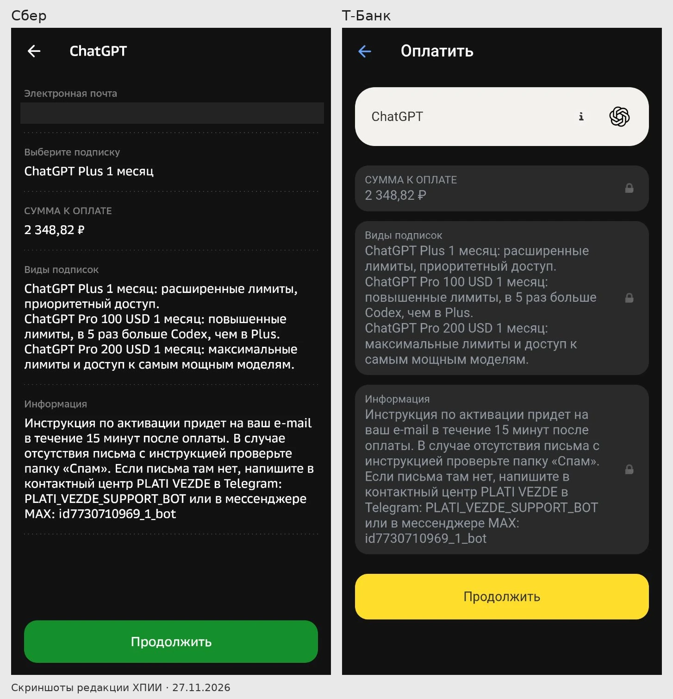
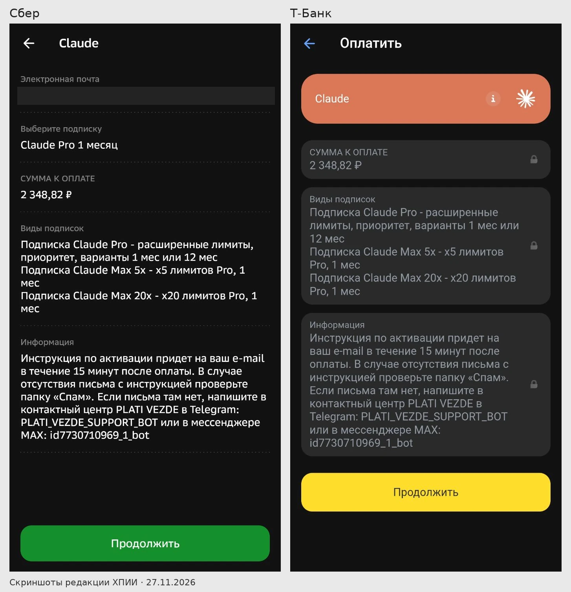
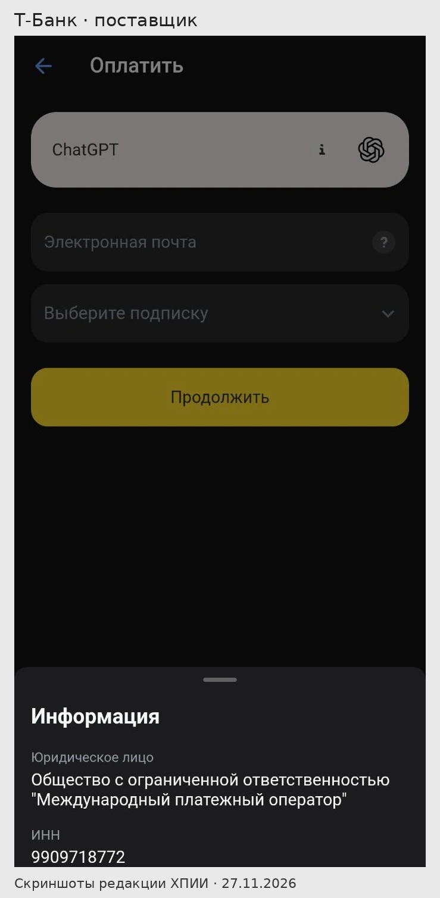
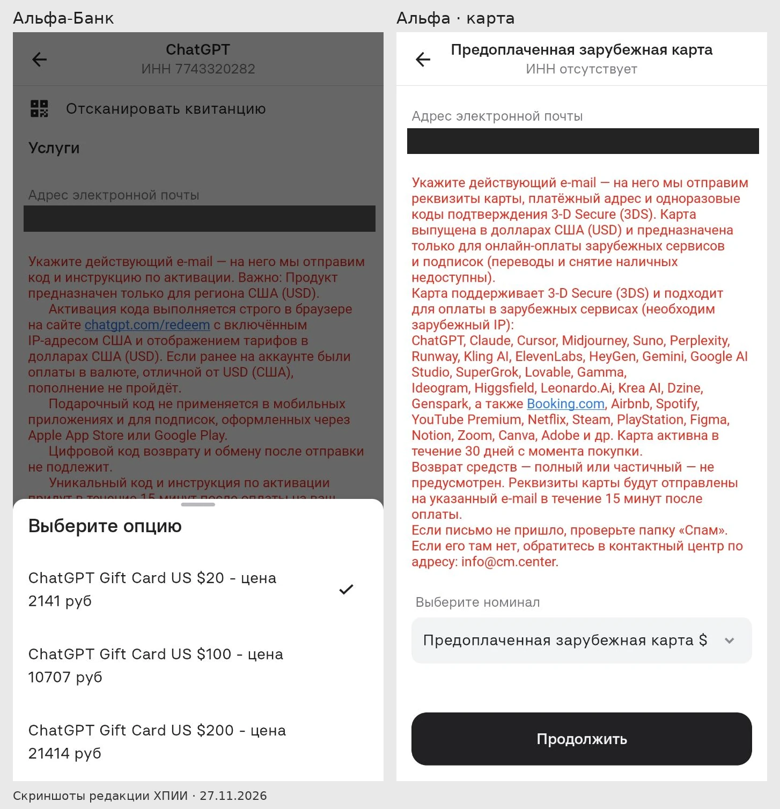
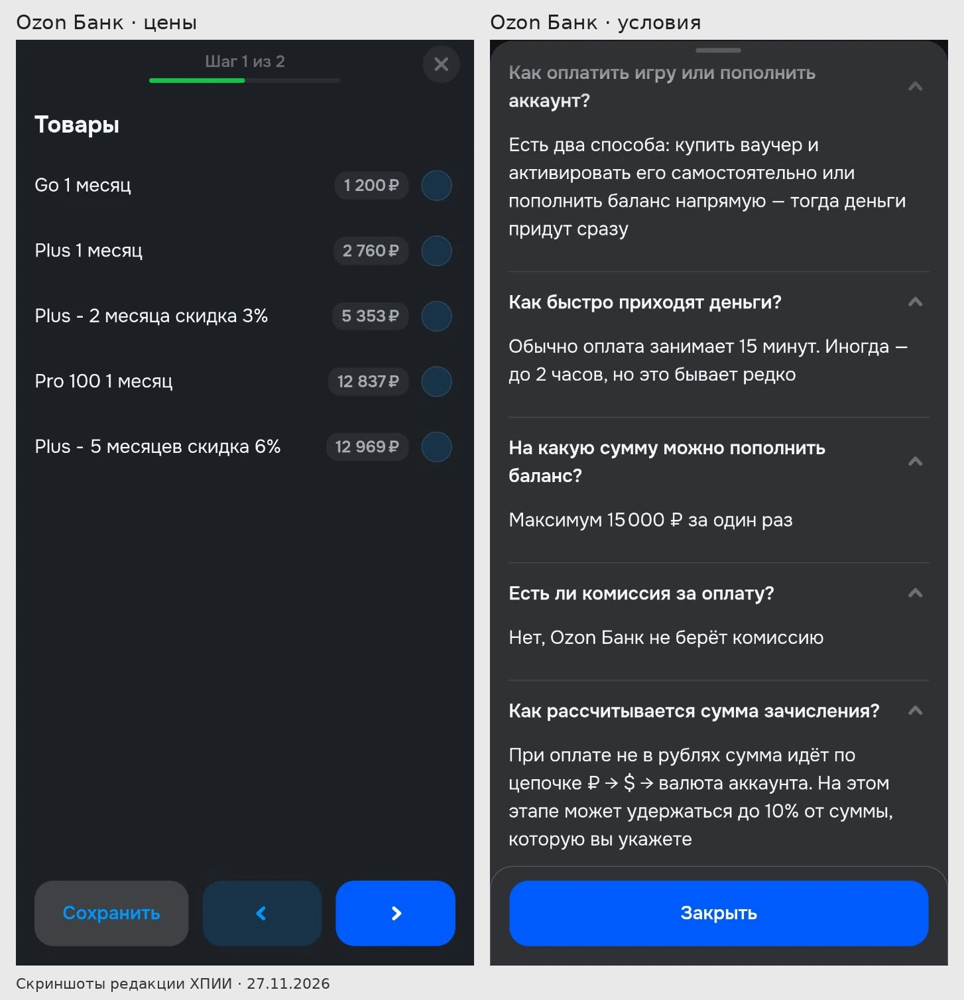
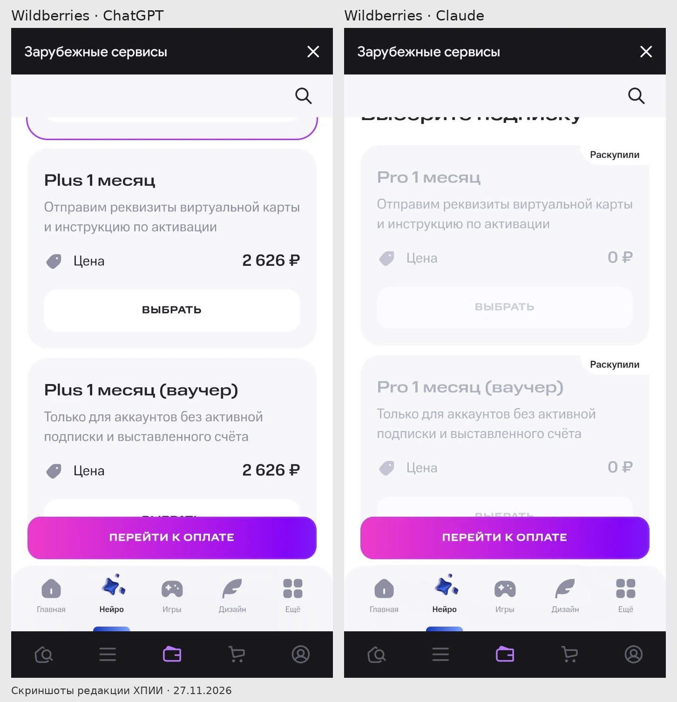
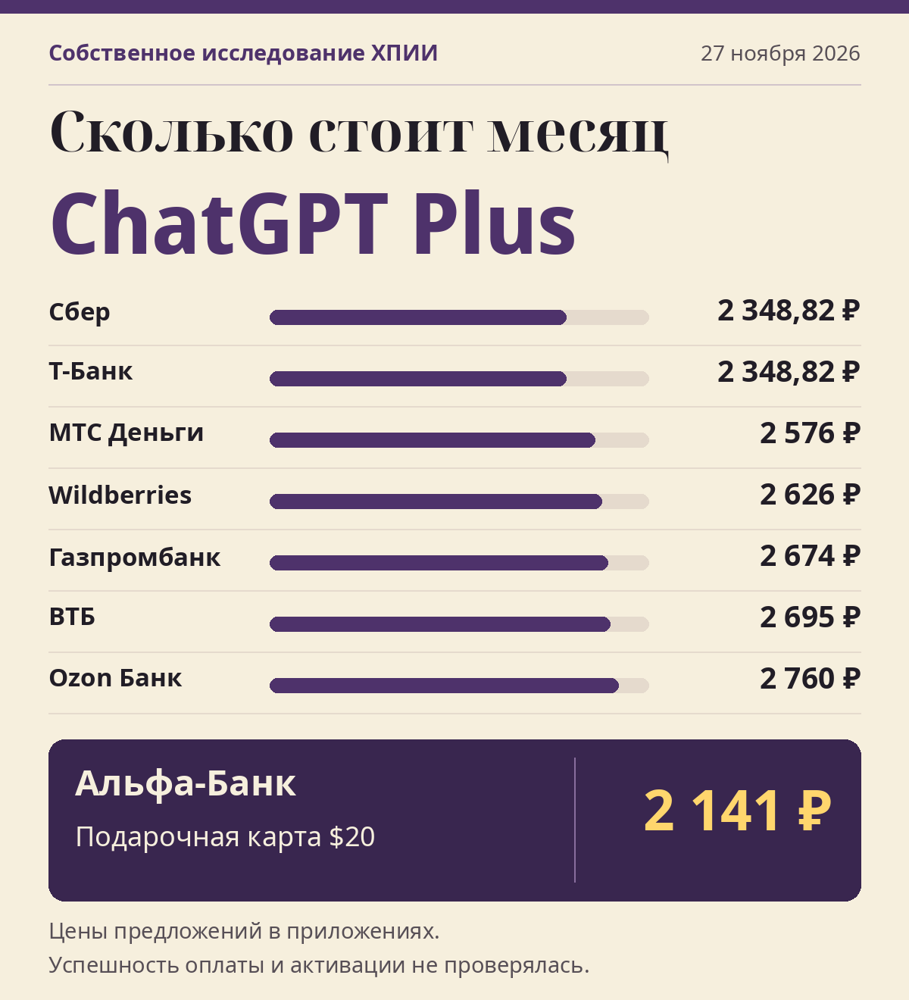

До копейки одинаковые цены, одинаковые описания подписок и даже один и тот же бот поддержки в Telegram.
Именно это мы обнаружили, сравнив предложения Сбера и бывшего Тинькофф.
27 ноября редакция ХПИИ изучила девять приложений российских банков, маркетплейсов и цифровых магазинов. Оказывается, рынок оплаты зарубежных нейросетей уже вовсю освоили крупнейшие российские компании.
Причём некоторые из них предлагают весьма неожиданные способы оплаты.
Сбер и Тинькофф: найдите десять отличий
В СберБанк Онлайн зарубежные подписки спрятались в разделе «Платежи» → «Отдых и развлечения» → «Подписки».
В Т-Банке для них предусмотрен раздел «Онлайн-сервисы».
Сравниваем цены:
| Подписка на месяц | Сбер | Т-Банк |
|---|---|---|
| ChatGPT Plus | 2 348,82 ₽ | 2 348,82 ₽ |
| Claude Pro | 2 348,82 ₽ | 2 348,82 ₽ |
| Grok Premium | 3 523,23 ₽ | 3 523,23 ₽ |
| Midjourney Standard | 3 523,23 ₽ | 3 523,23 ₽ |
Совпадает всё. Даже копейки.
Заглядываем в информацию о поставщике услуг в приложении Т-Банка и обнаруживаем ООО «Международный платежный оператор» с ИНН 9909718772.
А в инструкциях обоих банков фигурирует один и тот же сервис PLATI VEZDE. Именно его служба поддержки должна помочь покупателю, если после оплаты не придёт письмо с инструкцией по активации.
Ассортимент у обоих банков приличный. Помимо популярных чат-ботов, в каталогах есть генераторы изображений и видео, инструменты для программирования и озвучивания.
Альфа-Банк оказался дешевле
В обычном каталоге Альфа-Банка выбор нейросетей гораздо скромнее. Зато подарочные карты ChatGPT предлагаются по весьма интересным ценам:
- $20 — 2 141 рубль.
- $100 — 10 707 рублей.
- $200 — 21 414 рублей.
Указанный в приложении ИНН принадлежит московскому ООО «Софикс».
Правда, у подарочных кодов есть существенные ограничения по региону аккаунта, валюте предыдущих платежей и способу оформления подписки.
Но гораздо интереснее другое предложение Альфы: предоплаченные зарубежные банковские карты номиналом от 20 до 500 долларов.
Карта на 20 долларов обойдётся в 2 312 рублей, на 100 долларов — в 11 563 рубля.
Картой можно расплачиваться в зарубежных интернет-сервисах, однако действует она всего 30 дней. Возврат неиспользованных средств условиями предложения не предусмотрен.
Ozon и Wildberries тоже в деле
Похоже, конкурировать маркетплейсы теперь решили ещё и на рынке нейросетей.
В Ozon Банке мы обнаружили Gemini, Grok, DeepSeek, OpenRouter, Z.ai, Suno, Midjourney и десятки других инструментов.
Есть отдельные предложения для разработчиков, желающих пополнить баланс OpenAI.
ChatGPT Go стоит 1 200 рублей в месяц, Plus — 2 760 рублей, а Pro 100 — 12 837 рублей.
В Wildberries месячный ChatGPT Plus стоит немного дешевле: 2 626 рублей.
Причём покупателю предлагают два варианта: цифровой ваучер или реквизиты виртуальной карты для самостоятельной оплаты подписки.
Некоторые позиции уже помечены надписью «Раскупили». На момент нашей проверки оформить Claude Pro через витрину Wildberries было невозможно.
Заглянули мы и в договор оферты веб-витрины Ozon. Её владельцем указана компания Digitalwallet FZE, зарегистрированная в Объединённых Арабских Эмиратах, а оператором денежных переводов выступает Мурманский расчётный банк.
Поддержка покупателей осуществляется через сервис Pay Digital. Этот же сервис мы обнаружили в приложении ещё одного крупного российского банка.
ВТБ, Газпромбанк и МТС
В Газпромбанке ChatGPT одиноко обосновался в разделе «Платежи» → «Развлечения».
За месяц Plus просят 2 674 рубля. В случае возникновения проблем покупателя направляют в поддержку Pay Digital.
У ВТБ выбор заметно шире. Помимо ChatGPT, присутствуют Midjourney, ElevenLabs, Suno, Lovable и другие нейросети. Месячный ваучер ChatGPT Plus стоит 2 695 рублей.
В приложении «МТС Деньги» ChatGPT Plus предлагается за 2 576 рублей. Есть даже комбинированные подписки: например, ChatGPT Plus и Midjourney Standard вместе стоят 5 696 рублей.
А совсем недавно МТС начала продавать зарубежные банковские карты, которые можно пополнять из России.

А что в RuStore?
В российском магазине приложений тоже появился солидный ассортимент зарубежных нейросетей.
Правда, ChatGPT и Claude на момент нашей проверки в приложении обнаружить не удалось.
Зато месяц Midjourney Standard стоит 4 281 рубль, ElevenLabs Creator — 3 373 рубля, а за 20 долларов на балансе OpenAI API просят 2 984 рубля.
Где дешевле?
Вот что получилось по итогам проверки 27 ноября.
| Площадка | ChatGPT Plus, месяц | Claude Pro, месяц | Midjourney Standard, месяц |
|---|---|---|---|
| Сбер | 2 349 ₽ | 2 349 ₽ | 3 523 ₽ |
| Т-Банк | 2 349 ₽ | 2 349 ₽ | 3 523 ₽ |
| МТС Деньги | 2 576 ₽ | — | — |
| Wildberries | 2 626 ₽ | Раскупили | 3 746 ₽ |
| Газпромбанк | 2 674 ₽ | — | — |
| ВТБ | 2 695 ₽ | — | Есть* |
| Ozon Банк | 2 760 ₽ | — | Есть* |
| RuStore | — | — | 4 281 ₽ |
Цена не проверена. Прочерк означает, что отдельное предложение не обнаружено при проверке.
Особняком стоит Альфа-Банк с подарочной картой ChatGPT номиналом 20 долларов за 2 141 рубль.






Деньги-то возьмут. А аккаунт не заблокируют?
Россия по-прежнему отсутствует в списках поддерживаемых стран OpenAI и Anthropic.
Более того, 12 ноября Anthropic обновила правила, прямо указав, что её сервисами нельзя пользоваться, физически находясь в неподдерживаемой стране.
Мы уже рассказывали, как российский пользователь предъявил Claude паспорт и лишился аккаунта.

При этом российские банковские приложения спокойно предлагают оплатить подписку на тот самый Claude.
Покупка через известный банк не отменяет ограничений разработчика нейросети. А вернуть деньги за уже отправленный цифровой код, судя по условиям некоторых продавцов, может оказаться непросто.
Все девять приложений мы проверили самостоятельно. Изучили каталоги, цены, условия и сведения о поставщиках. Контрольных покупок не проводили.
Поэтому прежде чем отдавать несколько десятков тысяч рублей за годовую подписку, стоит выяснить, что именно вам продают и кто будет отвечать, если воспользоваться покупкой не получится.
